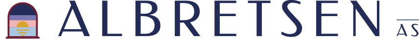
Design 64 · Heure Bleue · asset kit
Hero
A terrace above a shelf of zinc mansard roofs; whitewashed houses step down to a bay; the sun has just touched the water. Built from three.js primitives with one family of poster shaders, baked to stills and kept live. Blue hour is the resting state.
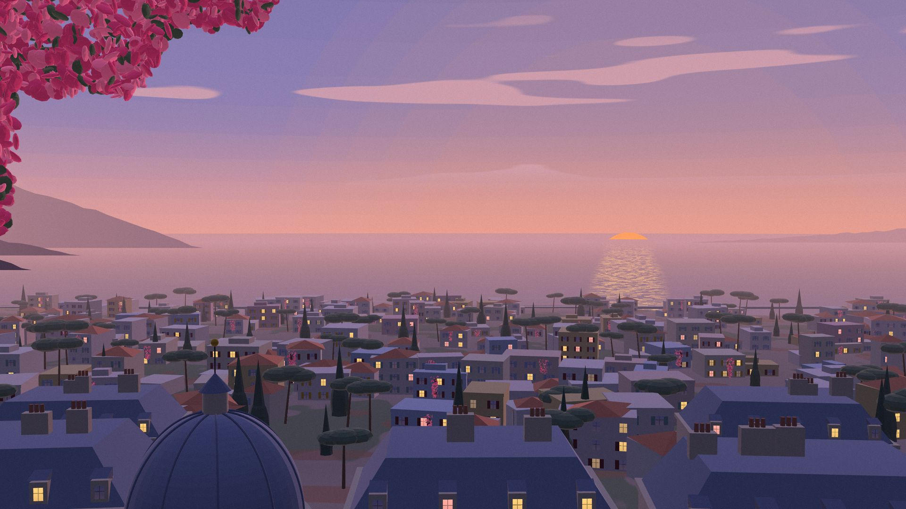
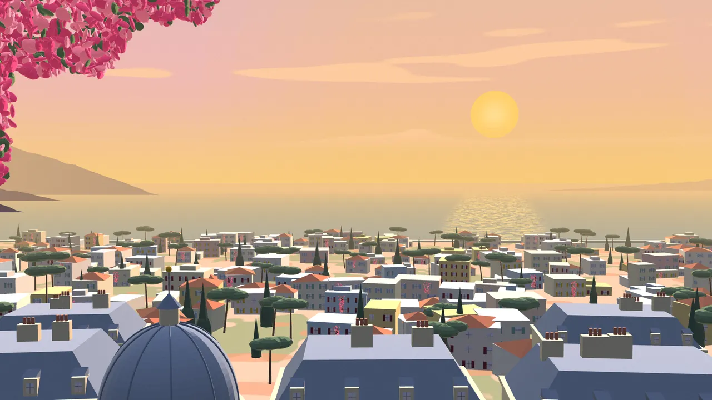
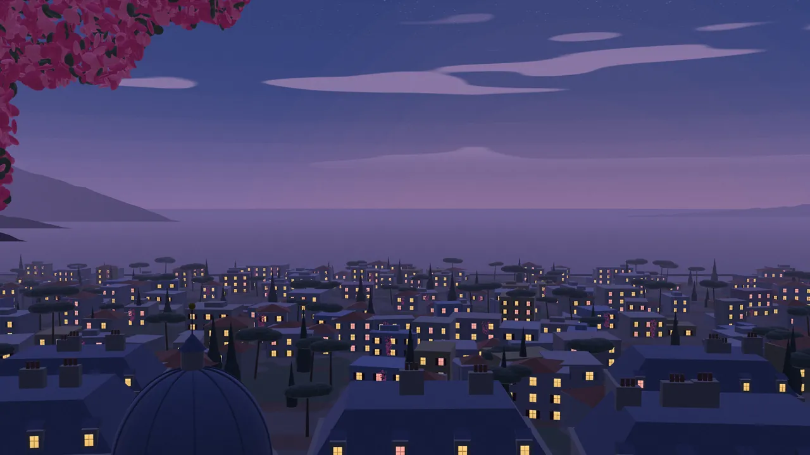
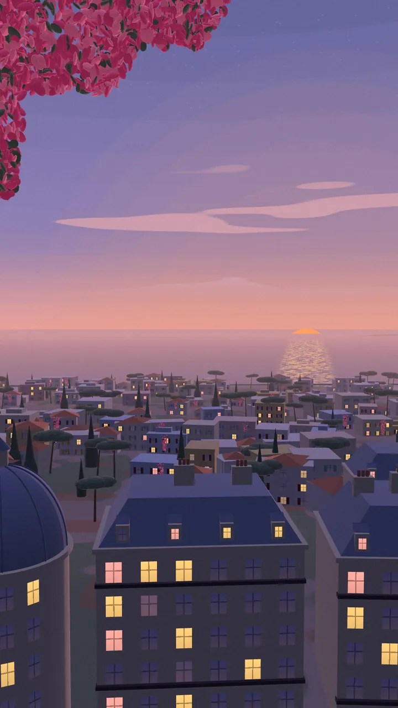
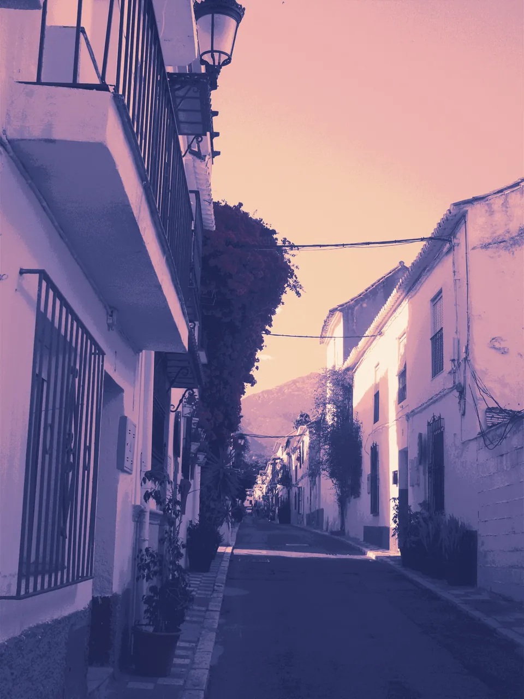
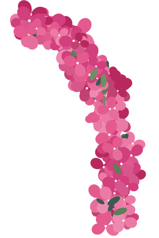
.hb-swayLive scene: drag the sun
3d/heure-bleue.js exports createHeureBleue(canvas, { time }). Grab the sun and pull it up or down: the sky bands, sea glitter, light on the walls and the town's windows all follow; it drifts back to blue hour six seconds after you let go. Loads only on click here; on a site, load it after first paint over the still.
Products in the world
Each product's real logo, unchanged, set into the town: an enamel plaque on a letterbox, a tent card on a terrace table, the centre tile of a painted panel, a sign in a lit dormer. SVG with the logo embedded, plus 600/1200 px WebP and AVIF.
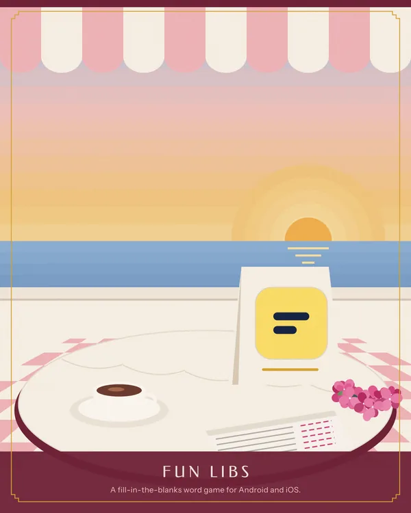
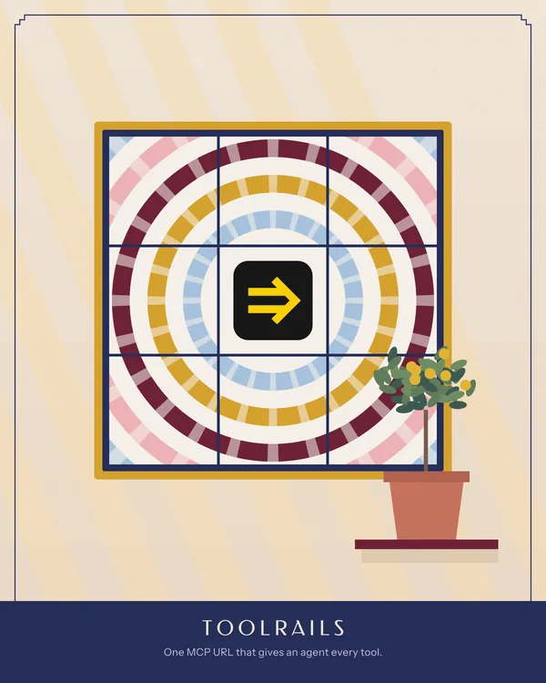
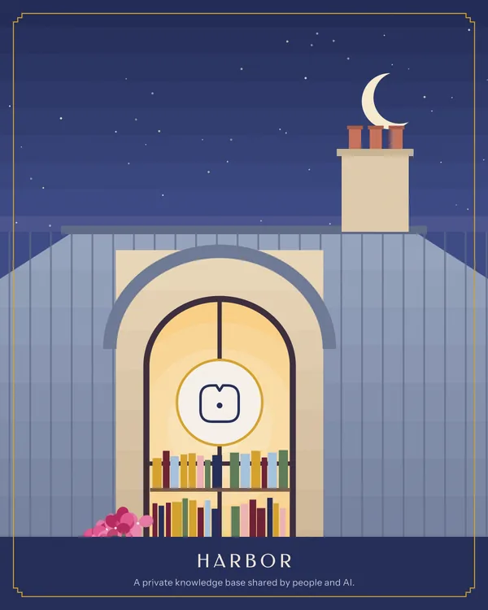
Retired products: stamps
Small stand-ins for products without surviving brand assets (Luma uses its real wordmark). Perforated, 240 × 300.
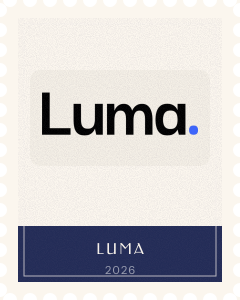
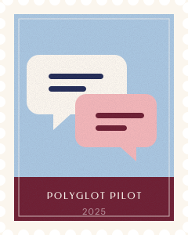
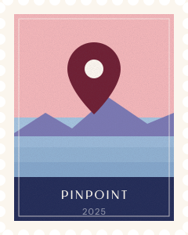
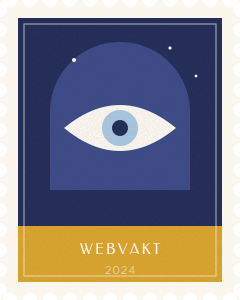
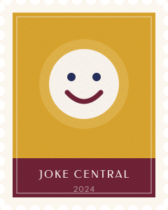
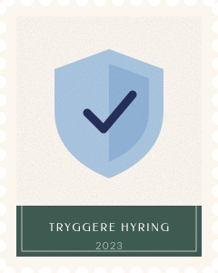
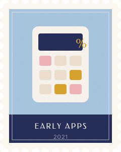
Identity
The mark is an arched window at blue hour: night above, a lavender and a pink band, the sun on the line, its reflection in three bars. It works from a 16 px tab to a terrace sign.

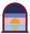
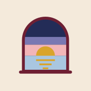
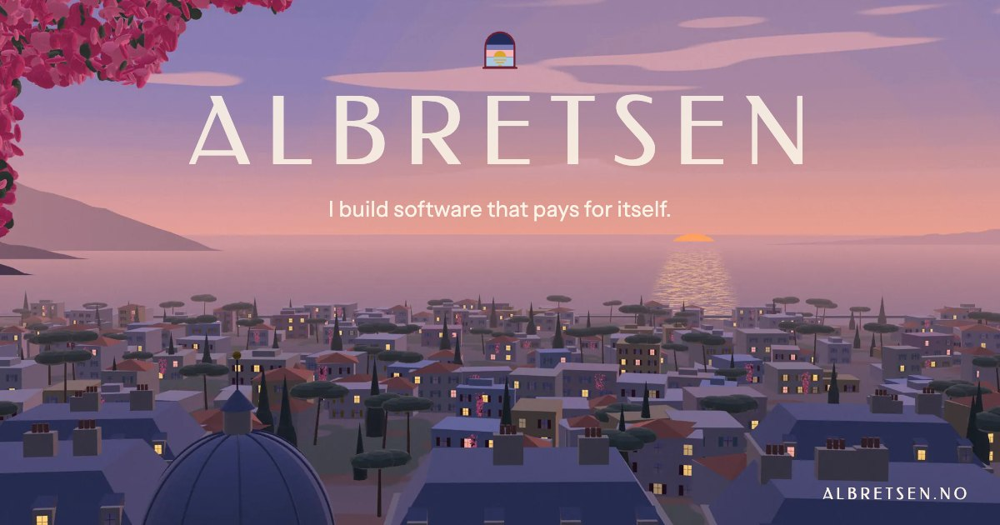
Palette
Anderson pastels lit at blue hour. Ink and plaster carry the page; pink, powder and mustard are the light; burgundy is the accent and the hand-painted sign colour.
Type
ALBRETSEN
Quiet software that pays for itself
113,000+
MCP Emails gives AI agents their own email: 17 tools, about 100 email providers, open source under the AGPL. Fun Libs is a fill-in-the-blanks word game, built at 17, with more than 113,000 installs and no marketing. Takes one outside engagement at a time.
Live · since 2026 · $782 MRR
Extras
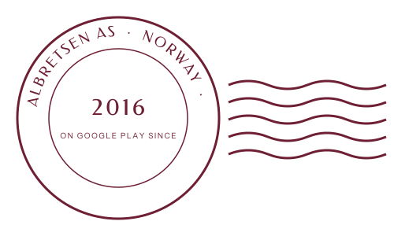
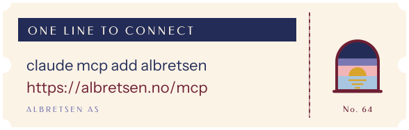
Motion study
motion.css + motion.js. Six named signatures, all slow and small, all off under reduced motion.
@property length in a repeating gradient, no JS per frame). Reference: Codrops' blinds-style image reveals.ALBRETSEN
Files
Full inventory, sources and licences in ASSETS.md.